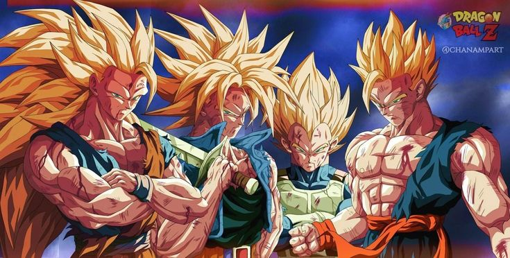
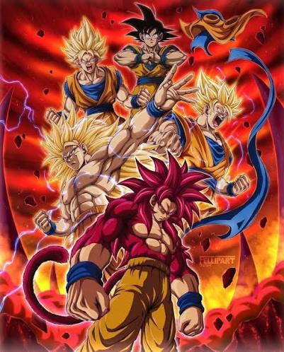

Los Saiyajines componen una raza de guerreros pertenecientes al universo de Dragon Ball que,
aunque comparten un mismo origen biológico en el ancestral planeta Sadala, se dividen en diversas variaciones y linajes a lo largo de la historia:
por un lado se encuentran los Saiyajines puros de sangre como Goku, Vegeta o Bardock, caracterizados por poseer cola de mono,
una juventud prolongada enfocada en el combate y un cabello característico que no altera su forma al crecer;
por otro lado destacan los híbridos mestizos nacidos del cruce con seres humanos como Gohan, Trunks y Goten,
quienes demuestran un potencial de poder oculto superior a edades tempranas y un crecimiento capilar estándar;
de manera paralela existen los Saiyajines del Universo 6 como Cabba, Caulifla y Kale, una rama evolutiva que prescindió de la cola de mono,
conservó su planeta natal y desarrolló una fisonomía más esbelta con una increíble facilidad de transformación;
finalmente se suman a la lista las variaciones mutantes de poder ilimitado como los Super Saiyajines Legendarios (Broly y Kale),
los ancestros primitivos como Yamoshi y Cumber, y las creaciones artificiales o biológicas que incorporan su ADN como Cell o Bio-Broly.
Personajes

Sangre pura (Universo 7): Goku (Kakarotto), Vegeta, Broly, Bardock, Raditz, Nappa, Gine, Paragus, Tarble, Cumber, Yamoshi.
Híbridos (Saiyajin / Humano): Gohan, Trunks, Goten, Pan, Bra.
Universo 6: Cabba, Caulifla, Kale, Renso.
Fusiones: Vegeto, Gogeta, Gotenks, Kefla.
¿Qué ocurrió con el Planeta Vegeta?
El Planeta Vegeta (originalmente llamado Planeta Plant antes de ser conquistado por los Saiyajines) fue destruido por Freezer.
El emperador del universo temía que la leyenda del Super Saiyajin o del Super Saiyajin God se hiciera realidad y que la raza guerrera se rebelara contra su dominio.
Tras reunir a la gran mayoría de los Saiyajines en su planeta natal con el pretexto de una reunión, Freezer lanzó una gigantesca bola de energía (Supernova)
desde su nave espacial directamente hacia el núcleo del planeta.
Transformaciones

Las transformaciones de la raza Saiyajin representan aumentos exponenciales de poder impulsados por la ira,
el entrenamiento severo o el ki divino: comienzan con la forma primitiva del Ozaru (Mono Gigante al contemplar la luna llena),
evolucionan a través de las fases clásicas del Super Saiyajin (1, 2, 3 y la variante de masa muscular Grade 3),
alcanzan el nivel místico con el Super Saiyajin God (ki divino de aura roja) y el Super Saiyajin Blue (combinación del God con el SSJ),
y se ramifican en estados únicos como el Super Saiyajin Legendario/Berserker de Broly y Kale, la forma Ozaru Dorado y Super Saiyajin 4,
así como las doctrinas definitivas alcanzadas de forma individual: el Ultra Instinto de Goku, el Ultra Ego de Vegeta y la transformación Gohan Beast.